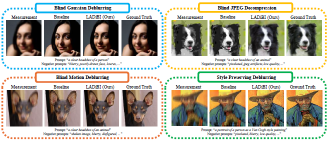
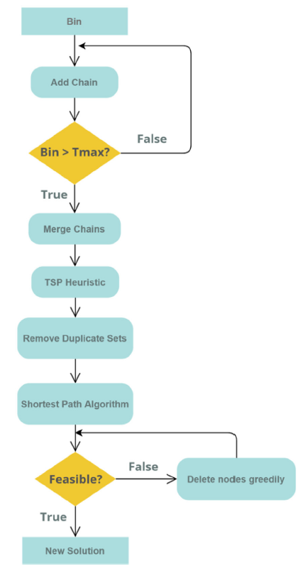
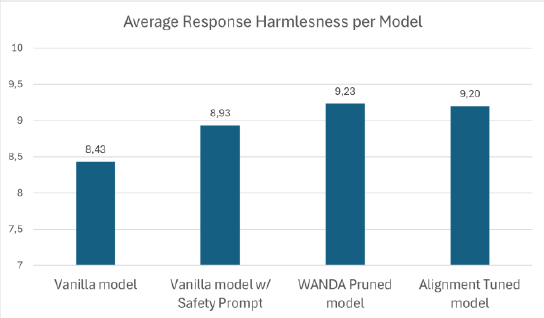
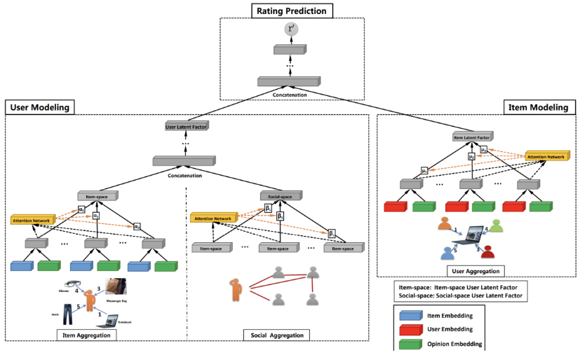
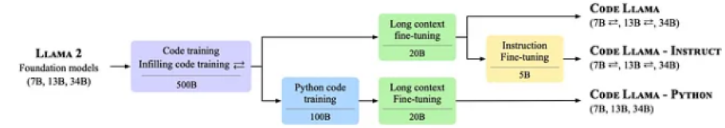

mixalis.dont@gmail.com
Michael Dontas
Hi! I have recently received my M.Sc. in Computer Science from Carnegie Mellon University, focusing on Machine Learning and AI. I was fortunate to collaborate with Prof. Ruslan Salakhutdinov, Prof. Zico Kolter as well as the Sony AI team on developing a training-free framework for blind image restoration based on latent text-to-image diffusion models.
Prior to CMU, I received my B.A. in Management Science and Technology from Athens University of Economics and Business (AUEB), where I graduated as class valedictiorian. I was advised by Prof. Emmanouil Zachariadis and Prof. Panagiotis Louridas at AUEB.
Links: CV / Github / Google Scholar / Linkedin
Research
My work focuses on harnessing the power of multimodal diffusion models to address complex challenges in visual understanding and generation. My research explores the intersection of generative models and multimodal learning, with a particular emphasis on leveraging the unique capabilities of diffusion models to process and synthesize diverse data types, such as images, text, and audio. In my most recent research project, I demonstrated how these models can be effectively applied to solve real-world problems in Computer Vision, such as restoring a high quality image from a corrupted visual measurement.
My goal is to contribute to the creation of AI systems that not only achieve high performance but also exhibit a deeper understanding of the context and relationships between diverse inputs. Through my work, I aim to push the boundaries of what is possible in generative modeling, driving innovations that transform human-computer interaction, creativity, and decision-making.
Publications
(† indicates equal contribution)
-
Michail Dontas†, Yutong He†, Naoki Murata, Yuki Mitsufuji, J. Zico Kolter, Ruslan SalakhutdinovComputer Vision and Pattern Recognition (CVPR) 2025We present a training-free framework that uses large-scale text-to-image diffusion models to solve blind inverse problems. Our method jointly models priors for both the target image and operator by leveraging natural language prompts, and is able to operate without predefined operator forms. Our experiments demonstrate the capability of solving a broad range of image restoration tasks on diverse target image distributions. -
Michael Dontas, Georgios Sideris, Eleftherios G. Manousakis, Emmanouil E. ZachariadisEuropean Journal of Operational Research (EJOR) 2023We introduce a novel adaptive memory matheuristic algorithm for the Set Orienteering Problem (SOP), which combines local search with mathematical programming components and an adaptive memory mechanism, outperforming existing methods on 98% of the benchmark instances.
Select Projects
-
Michail Dontas, Qiulu PengWe explore jailbreak attacks on large language models (LLMs) by participating in the Jailbreaking Arena, successfully attaking 22 out of 25 models, and develop defense strategies like safety system prompting, parameter pruning, and alignment fine-tuning to enhance model robustness against adversarial prompts. In Advanced Topics in Machine Learning and Game Theory @ CMU (Fall 2024) -
Michail Dontas, Robert Pare, Raghu RadhakrishnanWe inverstigate the use of Graph Neural Networks (GNNs) for collaborative filtering on the Epinions dataset, demonstrating that a GNN-based model outperforms a Neural Collaborative Filter (NCF) baseline in accuracy and RMSE by effectively capturing user-item and user-user interactions for improved recommendations. In Probabilistic Graphical Models @ CMU (Spring 2024) -
Michail Dontas, Raunak SoodWe explore a novel method for improving neural test case generation by fine-tuning code large language models (LLMs) on pragmatically selected test cases. Using the CodeT algorithm to generate a dataset of informative program-test case pairs, we demonstrate that fine-tuned models produce more accurate and diverse test cases compared to off-the-shelf models, as evidenced by improvements in both pass@k and CodeBLEU metrics. In Advanced Deep Learning @ CMU (Spring 2024)
Honors and Awards
- Leventis Scholarship, The A.G. Leventis Foundation (2023)
- Onassis Scholarship, Onassis Foundation (2023)
- Syn-Enosis for Education Scholarship, Union of Greek Shipowners (2023)
- Diligent Student Scholarship, State Scholarships Foundation of Greece (2023, 2022, 2021)
- Moving Education Forward Award, Euronank Greece (2018)
- Graduate of the Year Award, Rhodes College (2018)